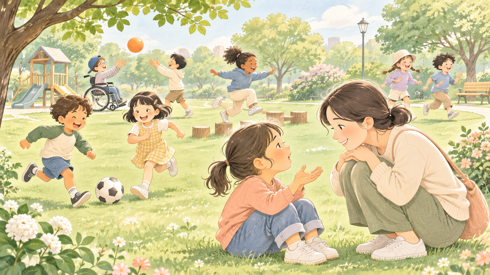

아이의 마음을
만나는 시간
아이의 행동에는 이유가 있어요. 나이에 따라 달라지는 마음을 이해하고, 오늘 건넬 수 있는 말부터 함께 찾아봐요.
부모가 완벽할 필요는 없어요
강의와 메모에서 만난 핵심은 안전한 관계, 자기조절, 공감이에요. 아이는 누군가에게 이해받고, 안전한 범위에서 선택하고, 다른 사람과 관계를 맺으며 조금씩 자라요.
나이는 대략적인 길잡이예요. 아이마다 기질·발달 속도·환경이 다르니 앞뒤 시기를 함께 살펴봐도 좋아요. 0–3세와 4–7세는 만 나이 기준이며, 취학 시기와 겹칠 수 있어요.
“세상은 안전할까?”
안정적인 애착과 함께 주목하기. 아이가 보내는 눈빛과 몸짓에 어른이 반응하고, 같은 대상에 관심을 나누며 안전하게 탐색하도록 도와요. 이때 뇌는 사람과 주고받는 경험을 통해 발달해요.
아이에게 일어나는 일
- 안아 달라거나 떨어지기 싫어하는 등 가까운 어른에게 위안을 구해요.
- 눈길·옹알이·가리키기로 관심을 나눠요. 아이와 어른이 같은 것을 바라보는 경험을 ‘공동 주의’라고 해요.
- 어른의 행동과 표정을 관찰하고 따라 하며 관계를 배워요.
- “내가 할래!”가 늘지만 기다리거나 감정을 다루는 일에는 도움이 필요해요.
부모가 해볼 일
- 아이가 바라보거나 소리 내면 눈을 맞추고 말·표정으로 응답해요. 아이가 싫어하는 접촉은 살펴 멈춰요.
- 아이가 가리킨 것을 함께 바라보며 “강아지가 있네” 하고 답해요. 그림책·까꿍·바닥 놀이에서도 아이의 관심을 따라가요.
- 아이가 안심하고 탐색하다가 힘들 때 돌아올 수 있도록 곁에서 살펴요. 아이가 원할 때 따뜻하게 안아 주고 반응해요.
- 위험한 행동은 막고 가능한 대안을 짧게 말해요. 잠·식사 같은 일과를 예측 가능하게 만들어요.
“더 놀고 싶어서 속상했구나. 길에서는 손을 잡고, 공원에서 다시 뛰자.”
울고 있다면 긴 설명보다 먼저 곁에서 진정할 수 있게 도와주세요.4~7세 핵심 지침
신체활동을 늘려주세요!
김붕년 교수 강의 핵심 · 액티비티
교수님이 반복해서 강조한 메시지예요. 매일 뛰고, 걷고, 놀며 몸을 움직이는 시간을 충분히 만들어 주세요. 수강 메모에는 이 시기를 “뇌가 2배 성장하는 이벤트”로 기록했어요. 몸을 움직이며 감각과 움직임을 함께 경험하는 것이 뇌 발달에 도움이 돼요.
4~7세, 매일 몸을 움직이는 시간을 늘려요
특별한 운동 수업이 아니어도 좋아요. 아이가 즐겁게 뛰고 움직일 기회를 일상에 자주 만들어 주세요.
놀이터에서 뛰기 · 함께 걷기 · 계단 오르기
공놀이 · 술래잡기 · 음악에 맞춰 춤추기
안전한 장애물 넘기 · 스트레칭 · 몸으로 표현하기
강의의 활동 피라미드를 쉽게 풀어 쓴 예시예요. 아이의 건강과 능력, 날씨와 공간에 맞춰 안전하게 조절해요.

강의에서 기억할 핵심
- 가장 중요한 실천은 신체활동 늘리기: 앉아 있는 시간을 줄이고 아이가 매일 다양하게 움직이며 놀도록 도와요.
- 자기조절: 하고 싶은 것을 잠시 미루고, 감정과 행동을 조절하는 힘을 일상에서 연습해요.
- 아이의 관심을 따라 뛰기, 걷기, 공놀이, 춤추기처럼 다양한 움직임을 즐겨요.
- “왜?”라고 묻고 역할놀이와 친구 놀이를 즐길 수 있어요.
- 차례를 기다리고 양보하는 것을 배우지만 피곤하거나 흥분하면 어려울 수 있어요.
- 스스로 고르고 싶어 하며, 결과가 뜻대로 안 되면 큰 감정을 보이기도 해요.
부모가 해볼 일
- 안전한 선택지 두 개를 제시해요. “빨간 옷과 파란 옷 중 뭘 입을까?”
- 규칙은 적고 구체적으로 정해 반복해요. “실내에서는 걸어요.” 직접 보여주면 더 좋아요.
- 매일 몸을 움직이며 놀 기회를 만들어요. 놀이터에서 뛰기, 산책, 공 주고받기, 음악에 맞춰 춤추기처럼 아이가 즐기는 활동부터 시작해요. 날씨나 아이의 능력에 맞게 안전하게 조절해요.
- 자유 놀이를 충분히 하고 그림책 속 인물의 마음을 함께 상상해요.
- 기다리기·차례 지키기를 놀이로 짧게 연습하고, 어려워하면 시간을 줄여 성공을 도와요. 결과보다 연습 과정을 살펴요.
- 장소에 맞는 규칙을 미리 알려줘요. 식당에 가기 전 “뜨거운 음식이 있어서 안에서는 걸어 다니자”라고 말하고, 직접 보여주며 반복해서 연습해요.
- 예절과 배려를 생활 속에서 가르쳐요. “고맙습니다”, “기다려 주세요”를 어른이 먼저 사용하고, 자동차에 관심을 보일 때 횡단보도와 신호도 함께 배워요.
- 생각하는 힘을 키워요. “사과는 빨갛다”에서 끝내지 말고 “빨간 과일은 또 뭐가 있을까?”, “빨간 사과는 모두 같은 색일까?”처럼 묻고 아이가 생각할 시간을 줘요.
“장난감을 더 갖고 싶구나. 친구를 때리면 안 돼. ‘나도 다음에 쓸래’라고 말해볼까?”
“친구는 어떤 마음일까?”
김붕년 교수 강의 핵심: 공감. 친구와 협동하고 다투고 화해하며 서로 다른 마음을 배워요. 강의는 초등 시기 사회성 발달에서 공감을 중요하게 다뤘어요. 뇌는 놀이와 관계 속에서 다른 사람의 감정과 생각을 이해하는 연습을 이어가요.
아이에게 일어나는 일
- 학교와 친구 관계가 넓어지고 소속감과 인정이 중요해져요.
- 강의에서는 공감을 이해할 때 행동을 보고 따라 하기, 상대의 감정에 반응하기, 상대의 생각과 입장 이해하기라는 세 가지 요소를 소개했어요. 아이마다 배우는 속도는 달라요.
- 비교와 실패에 속상할 수 있고, 갈등의 양쪽 이야기를 모두 보기 어려울 수 있어요.
부모가 해볼 일
- 친구 문제를 곧장 판결하기보다 “너는 어떻게 느꼈어?”라고 먼저 들어요.
- “친구는 어떤 마음이었을까?”라고 묻되, 아이의 상처를 먼저 인정해요. 책이나 영화 속 인물의 마음을 이야기하는 것도 좋아요.
- 부모가 아이의 표정과 감정을 살피고 말을 끝까지 들으며 공감을 보여줘요.
- 놀이나 집안일에서 협력·순서·실패 후 다시 시도하는 경험을 만들어요.
- 결과만 평가하기보다 구체적으로 관찰한 노력과 배려를 말해요.
“친구가 빼놓고 놀아서 속상했겠다. 네 얘기를 더 들려줄래? 내일 어떻게 해보면 좋을까?”
반복적인 괴롭힘이나 안전 문제가 의심되면 아이 혼자 해결하게 두지 말고 학교와 함께 개입해요.공감은 어떻게 자랄까요?
강의에서 소개한 세 가지를 일상에서 쉽게 살펴봐요.
어른이 인사하거나 도와주는 모습을 보고 아이도 따라 해봐요.
친구가 속상해 보이면 “슬픈가 봐” 하고 마음을 알아차려요.
“친구는 왜 그렇게 생각했을까?” 서로 다른 입장을 상상해요.
이해를 돕는 생활 속 예시예요. 세 요소가 모든 아이에게 똑같은 순서나 속도로 나타난다는 뜻은 아니에요.
“내 세계와 선택을
존중해줘”
김붕년 교수 강의 핵심: 청소년의 변화와 또래 문화를 이해하고, 스스로의 선택을 응원해요. 독립하고 싶지만 여전히 믿고 돌아올 어른이 필요한 시기예요. 뇌 발달과 사춘기 호르몬 변화는 감정과 행동에 영향을 줄 수 있어요.
아이에게 일어나는 일
- 몸과 마음, 뇌의 연결이 변화하며 계획과 판단을 돕는 능력도 계속 발달해요. 스트레스가 큰 상황에서는 감정과 충동을 조절하기 어려울 수 있어요.
- 친구의 시선과 소속감이 중요해져요. 친구 관계에서 갈등, 질투와 화해를 경험하며 관계를 배워요.
- 자기만의 취향과 사생활을 원하고, 부모와 다른 생각을 표현하며 독립을 연습해요.
- 성적·진로·미래에 대한 압박이 커질 수 있어요. 겉으로 괜찮아 보여도 휴식이나 도움이 필요할 수 있어요.
부모가 해볼 일
- 음악·게임·유행을 평가하기 전에 “어떤 점이 재밌어?”라고 물으며 아이의 문화를 배워요.
- “내가 알아서 할게”라는 마음과 사생활을 존중해요. 진로 등은 선택지를 함께 살피고, 아이가 결정하는 연습을 응원해요.
- 말하기 싫어하면 시간을 주고 다시 만날 기회를 남겨요. 안전과 귀가 시간은 이유를 설명하고 함께 정해요.
- 성적보다 아이의 상태를 먼저 살피고 잠·식사·운동과 작은 휴식 시간을 챙겨요.
- 의견이 다를 때 이기려 하기보다 서로의 이유를 듣고 해결책을 찾는 토론을 해요. 공감하고, 함께 토론하고, 격려해요.
- 반복적인 괴롭힘이나 안전 문제가 있다면 아이 혼자 해결하게 두지 말고 학교나 전문가와 함께 보호해요.
“많이 힘들었겠다. 지금은 들어주면 좋을까, 같이 방법을 찾아볼까? 네 선택을 응원해.”
집에서 실천하는
공감 대화법 6단계
강의 사진에 나온 여섯 단계를 순서대로 담았어요. 각 단계 아래의 말과 행동은 집에서 실천하기 쉽도록 덧붙인 예시예요.
공감하기로 마음먹기
아이를 이해하기 위해 의식적으로 시간과 마음을 기울여요. 하던 일을 잠시 멈추고 대화할 시간을 내요.
몸과 마음 이완하기
숨을 천천히 쉬고 몸의 긴장을 풀어요. 화가 많이 났다면 잠깐 쉬었다가 열린 마음으로 돌아와요.
표정과 움직임 살피기
아이의 얼굴, 목소리와 몸짓에 주목해요. “오늘 표정이 어두워 보이네” 하고 조심스럽게 물어봐요.
감정을 함께 느끼기
아이의 감정에 관심을 두고 “그랬구나”, “속상했겠다”처럼 짧게 반응해요.
아이의 생각 따라가기
중간에 끊거나 곧바로 해결책을 주지 않고 아이의 이야기를 끝까지 들어요. “그다음에는 어떻게 됐어?”
요약하고 확인하기
들은 느낌과 생각을 내 말로 정리한 뒤 맞는지 확인해요. “친구에게 서운했고 혼자라고 느꼈다는 거지? 내가 잘 이해했을까?” 서로 이해한 기쁨을 나눠요.
공감은 모든 요구를 들어주는 것이 아니에요. “화나는 건 이해해. 하지만 때리기는 안 돼”라고 말할 수 있어요.
혼자 고민하지 않아도 돼요
예전과 다른 슬픔·불안·분노, 수면이나 식사 변화, 등교와 일상의 어려움이 이어지거나 아이와 가족이 감당하기 힘들다면 소아청소년과·소아청소년정신건강의학과, 학교 상담 선생님과 상의해요. 어린아이가 이미 하던 기술을 잃었거나 발달이 걱정될 때도 기다리지 말고 상담해요.
지금 안전이 걱정된다면
아이가 스스로를 해치겠다고 말하거나 즉각적인 위험이 있으면 혼자 두지 말고 위험한 물건을 멀리한 뒤 119 또는 가까운 응급실에 도움을 요청해요. 괴롭힘이나 폭력도 어른이 적극적으로 안전을 확보해요.
이 안내서는 일반적인 교육 자료이며 진단이나 개인별 치료를 대신하지 않아요. 어려움은 부모의 잘못이라고 단정할 수 없어요.
함께 읽고, 더 알아보기
강의 전체 녹취가 아닌 수강자가 제공한 슬라이드 사진과 손글씨 메모를 참고했어요. 연령별 배치는 읽을 수 있는 사진과 메모를 토대로 정리했으며, 사진에 없는 설명과 구체적인 대화는 부모를 위한 재구성이에요. 대화 예시는 이해를 돕기 위해 새로 작성했으며 교수님의 직접 발언이 아니에요. 영상은 제목과 공개 설명에서 주제를 확인해 추가 참고 자료로 연결했어요.
- 김붕년 교수 강의 사진과 수강 메모 · 2026.11.11 수강, 사용자가 제공한 자료.애착과 반응, 4~7세 뇌 성장과 신체활동, 자기조절·놀이, 공감 대화, 청소년의 또래 문화와 자율성, 스트레스와 도움 요청을 참고했어요. “뇌가 2배”는 수강 메모에 기록된 강의 표현이며, 특정 나이에 모든 아이의 뇌가 정확히 두 배가 된다는 독립적 수치로 검증한 것은 아니에요. 강의 사진 원본은 이 페이지에 재게시하지 않았어요.
- 지식인사이드 · 김붕년 교수 1부: 부모와 놀이영상의 공개 제목과 설명에서 자녀와 놀이 관련 주제를 확인했어요. 영상 전체 전사는 확인하지 못했어요.
- 지식인사이드 · 김붕년 교수 2부: 부모의 말과 청소년공개 제목과 설명에서 부모의 말투와 학교·학원에 대한 주제를 확인했어요. 영상 전체 전사는 확인하지 못했어요.
- CDC · 연령별 긍정적인 양육 방법연령별 놀이·소통·안전에 관한 보충 자료.
- CDC · 어린아이와 연결하고 소통하기반응, 경청과 감정 표현에 관한 보충 자료.
- CDC · 발달 이정표와 조기 상담발달 걱정과 이미 익힌 기술을 잃었을 때의 대응.
- 미국 국립정신건강연구소 · 청소년의 뇌청소년기 뇌의 발달, 또래 관계와 수면.
- CDC · 청소년기 이해와 부모의 역할독립과 관계의 변화에 관한 보충 자료.